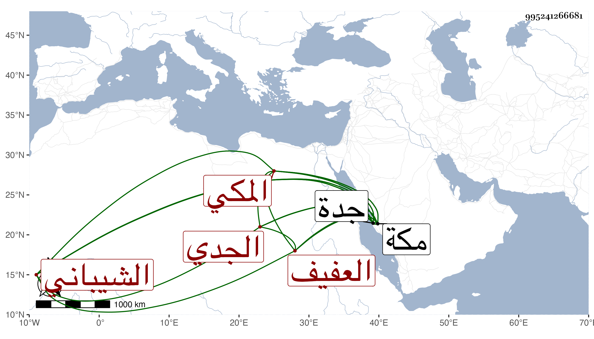

0902Sakhawi.DawLamic.ITO20230111-ara1.EIS1600.995241266681
Biography ID: 995241266681
76
عبد الله بن صالح بن أحمد بن أبي المنصور بن عبد الكريم بن أبي المعالي يحيى بن عبد الرحمن العفيف الشيباني المكي الجدي أخو جار الله الماضي . سمع بمكة من الفخر التوزري والسراج الدمنهوري وعثمان بن الصفي الطبري والشهاب الهكاري والنور الهمداني ... والتاج ابن بنت أبي سعد والعز بن جماعة وحدث سمع منه التقي الفاسي بجدة حديثا من الترمذي وبواسط الهدة هدة بني جابر ثلاثي الترمذي وكذا أخذ عنه التقي بن فهد وكان يقيم بجدة كثيرا ويخطب بها ويباشر عقود الأنكحة بها وفيه خير . مات في ربيع الأول سنة سبع عشرة عن سبع وسبعين سنة تزيد قليلا أو تنقص قليلا . ذكره الفاسي في مكة وتبعه شيخنا باختصار واقتصر من شيوخه على الثلاثة الأولين ثم قال وآخرين وتفرد بالرواية عنهم قال وقد قارب الثمانين .
